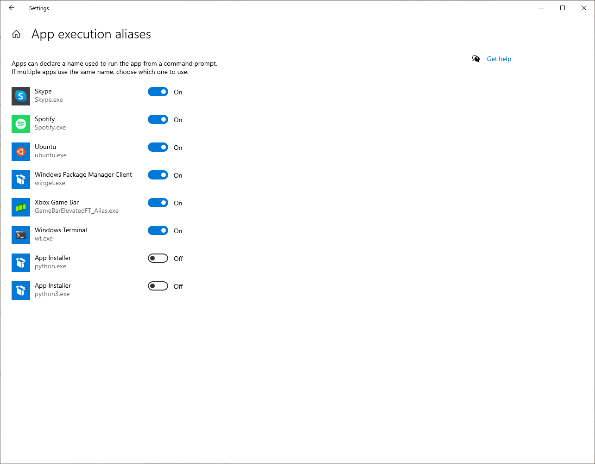
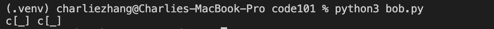

Foreword
Welcome to Code 101 With Python! This book is designed to get you up and running, from learning about variables all the way to building a simple pong game, no coding experience required. We'll cover the basic building blocks of code, along with some basic development skills, and we'll build some small projects together.
How the Book Works
Code 101 With Python is split up into 4 parts:
- Intro to Code — this covers the basics of computer history and fundamental code building blocks, as well as a few exercises.
- Intro to Development — here, we cover setting up a basic development environment and learn about the various tools programmers use day-to-day.
- Basic Development — delving more into packages and methods, as well as building two small projects together!
- About Classes — tackling a slightly more complex concept, classes, along with a build of Pong as our final project.
üöÄ These parts are intended to be tackled in order, especially if you've never written code before, so don't skip ahead without reading the previous chapters! We've tried to keep the information in here clean and concise, covering the essentials of how Python works and making sure you learn how to develop programs on your own.
About the Authors
This book was written by two Python programmers, Nathan Yeung (@ThatNerdSquared) and Charlie Zhang (@ragequit81). We couldn't find a clear, freely-available guide on getting started with code and Python, so we decided to start this project. Feel free to contact us1 if you have questions, suggestions, or ideas!
Ready to get started? Click the right arrow at the bottom of this page to move on to the first section: Intro To Code.
Open an issue on the GitHub; if you don't know how to do this, we'll cover it in Chapter 2, so hang tight for now.
Part One: Intro to Code
Welcome to coding with python! This chapter will cover the basics: code's historical background, the fundamental building blocks, basic data structures, and some common beginner questions. We'll also do some basic exercises together to make sure you have a good grasp of the concepts we're going to cover.
Computing and Code (~15 mins)
A Brief History
At first, computers were essentially glorified abacuses. Using mechanical parts, people were able to manipulate them to perform large or tedious calculations. However, one major downside of these machines was that they were not suitable for calculations involving many variables, as it would be hard to put together the mechanisms necessary to perform such large calculations. Early mechanical computers were also often unable to perform a variety of calculations, instead being built to solve specific equations.
One solution to these problems was to use digital instead of mechanical mediums. Instead of using physical moving parts, people started using vacuum tubes, which were components able to show an "on" and "off" state using electricity. By combining vacuum tubes into computers as big as a room, people were able to create computers such as the Mark I and the ENIAC, which could perform fairly complex calculations, and that were also re-programmable via punch cards or punch tape. The first programmers were able to use punch cards or tape in a labour-intensive process to instruct early computers to do things such as calculate shell firing trajectories. Later advances allowed computers to store calculations to run again later. These "stored programs" were the true beginnings of what we now know as software. Programmers often had to write in "machine code", which is close to binary, to make computers actually do things.
üìñ If you want to read more about this, The Innovators by Walter Isaacson is an excellent book on the history of computers, from the original mathematicians all the way to iPhones. In fact, it's where most of the above information comes from!
Code and Languages Today
Today, our computers and code have obviously improved far beyond the ones in the 1900s. We use programming languages to tell our computers what to do, instead of punch tape. Instead of the few programming languages that existed at the time, we now have a wide array of languages, some big and some small. In particular, most programming languages can be placed on a spectrum of low-level to high-level.
Low-level languages require the programmer to work closely with memory and chips to make things happen. This is often an intensive process, as many code structures must be manually built or defined. However, it also gives the programmer more control over what the program does and how it does it. As a result, code written in more low-level languages is often faster and takes up less memory. Examples of low-level languages include C, C++, and Rust.
High-level languages abstract most of the complexity of low-level languages away. Instead of worrying about how the code interacts with physical components, the programmer can use shorter, more intuitive commands to direct the computer, and the machine fills in the blanks based on pre-written code. While high-level languages are more friendly and convenient, programs written using them are usually slower and take up more memory than programs in low-level languages since more things are done automatically. Examples of high-level languages include Python and JS.
In this book, we'll be working with Python, as it's a very flexible, multi-purpose language that's both powerful and beginner-friendly.
Onto the Code!
Now that you know a bit about the history of computers and code, let's move on to talking about some code basics.
Building Blocks (~30-40 mins)
Binary, Data, Storage, Hex, and Memory
Today, computers understand and read data that they receive through binary. Binary is a sequence of 0's and 1's, put together. From apps to videos, the data that these actions produce ultimately boils down to binary. Now, there are a lot of way binary is abstracted, or simplified, to make it easier for humans to read, understand and work with. One of these systems is called hexadecimals, or hex.
In terms of code, every program that you write will be run in the computer's memory, or RAM. So, before we get into some basic code concepts, just remember that the way your program's data gets stored in computer memory can affect certain structures or parts of your code.
Now, without further ado, here are some basic concepts and data structures you'll come across while you code!
Variables
Variables are containers that store data for you to use in your code. For example, I created this variable number to have the integer value of 3. When I add it to 7, what's printed out is 10.
number = 3
print(number + 7) # output: 10
If you want a variable to hold a certain value, such as this number, you must assign it to the variable. This is how you create variables. So here's my variable name, and this equals sign assigns the integer 7 to this variable. So, this variable will always have the integer value 7, if I don't overwrite it. If I assign it again with something else, let's say 8, the variable changes.
number = 8
print(number) # output: 8
It's now the integer value 8. You can see this when I add number and 3 together, what's printed out is 11.
number = 8
print(number + 3) # output: 11
So, variables are containers that store data and you can also overwrite them by reassigning them.
Strings
Strings are data types that store sequences of characters, such as like "hello world". To create a string in Python, you put quotation marks around the characters you want as strings:
my_cool_string = 'this is some text as a Python string'
Strings are ordered, which means that characters are stored in a certain sequence. A character's place in this order is called an index. The index of the first character of a string is 0, the next is 1, and so on. For example, in this string "hello world", the string at index 0 is "h". At point 6, the string is "w":
my_cool_string = 'hello world'
print(my_cool_string[0]) # output: h
print(my_cool_string[6]) # output: w
If you want to extend or combine a string together, in python you can use the + sign. If you want to extend the current string that you have, you can use the += sign.
my_cool_string = 'hello world'
another_string = 'it is I'
a_third_string = my_cool_string + another_string
print(a_third_string) # output: hello world it is I
my_cool_string += 'it is me'
print(my_cool_string) # output: hello world it is me
This also works for numbers too:
my_cool_number = 42
another_number = 81
a_third_number = my_cool_number + another_number
print(a_third_number) # output: 123
my_cool_number += 1
print(my_cool_number) # output: 43
Lists
Lists are a type of data structure that store data in an ordered way. They are used to store and group data in a list-like form. Lists are very useful if you want to collect or store data that needs to have a specific order.
my_cool_list = ['this', 'is', 'a', 'list']
Each item is a list is known as an element. Elements can be strings, integers, variables, etc. For example, if I had the variables s0, s1, and s2 in a list called "data":
s0 = "this is an element"
s1 = "another element!"
s2 = "yet again an element"
data = [s0, s1, s2]
print(data[0]) would print s0, print(data[1]) would print s1, and print(data[2]) would print s2.
s0 = "this is an element"
s1 = "another element!"
s2 = "yet again an element"
data = [s0, s1, s2]
print(data[0]) # output: this is an element
print(data[1]) # output: another element!
print(data[2]) # output: yet again an element
Once we get into loops and functions, it'll be easier for you to see how lists can be useful for collecting various types of data.
Dictionaries
Dictionaries are a data structures that stores data in key value pairs. What does this mean? Instead of storing data in an order, dictionaries require a key for each piece of data put into it. For example, if I want to put the string "jeb" as a value in a dictionary, I would first have to make a key for it. Let's say this key is the string "reb". As in, my_cool_dictionary['reb'] = 'jeb'.
my_cool_dictionary = {
"a_cool_key": 'a cool value'
}
my_cool_dictionary['reb'] = 'jeb'
print(my_cool_dictionary)
# output:
#
# my_cool_dictionary = {
# "a_cool_key": 'a cool value'
# "reb": 'jeb'
# }
Now, the useful thing about dictionaries is that they allow you to instantly look up data. For example, if I wanted to access "jeb" in this dictionary, I can just write dict["reb"], as if I was look up a definition in the dictionary.
my_cool_dictionary = {
"a_cool_key": 'a cool value'
"reb": 'jeb'
}
print(my_cool_dictionary["reb"]) # output: jeb
However, as much as possible, you should try not to rely on dictionaries for values that should be ordered.
If Statements
if statements execute code depending on the value of a specific Boolean. A Boolean is a data type that is either True or False.
If the if statement evaluates a boolean to True, it will execute the code it leads to. However, if the if statement evaluates that boolean to False, it will not execute that code:
are_pretzels_good = True
if are_pretzels_good:
print("Agreed!")
# the above will get run because are_pretzels_good is set to True
if statements can also lead to elif and else statements. For example, in this program, if this if statement is False, the program will proceed to the elif statement. If this elif statement is False, it will go to the else statement.
are_pretzels_good = False
are_bananas_good = False
if are_pretzels_good:
print("Agreed!")
# the above won't be run
elif are_bananas_good:
print("Alright, fair.")
# the above won't be run
else:
print("HERETIC")
# the above will be run because are_pretzels_good and are_bananas_good are set to False
Loops
Loops repeat a block of code over and over again. There are two types of loops, for loops and while loops. for loops repeat, or iterate, a block of code a certain number of times. In Python, they allow you to iterate (repeat) over data in the order that they appear in. For example, in this for loop, I am iterating over the numbers list, and n is each element in the numbers list in the order they appear in.
numbers = [0, 1, 2, 3, 42]
for n in numbers:
print(n)
# output:
# 0
# 1
# 2
# 3
# 42
for loops are very useful if you want to iterate over data, as you can access the necessary elements and the loop ends after it has iterated over each element once. In this for loop, I am iterating over the numbers list and accessing each element in numbers to add them up in the sum variable before printing it out.
sum = 0
numbers = [0, 1, 2, 3, 42]
for n in numbers:
sum += n
print(sum) # output: 48
On the other hand, while loops keep on repeating their nested code as long as the condition you give them evaluates True. So, for example, if I say:
nums = 0
while nums != 6:
nums += 1 # this increases the value of nums each time
The while loop will keep on repeating until nums does equal 6. When nums equals 6, the loop ends. Now, you might ask, doesn't this mean that there are while loops that could be infinite?
And the answer to that is:
while True:
print("Pog Champ")
Yes.
Operators
In languages and code, operators are symbols that tells the complier or interpreter (code reader) to perform an operation. For example, the "+" and "-" operators in Python will subtract or add integers. The "+" will also concatenate strings and lists. Below is a list of common operators in Python:
== \( \rightarrow \)
Keywords
Like operators, keywords are words that tells the complier or interpreter (code reader) to perform an operation. For example, if and else are keywords in Python. Below is a list of common keywords in Python:
Functions
Functions are blocks of code that are run when they are called. For example, I can create a functions by definining, giving it a name, and writing parameters that the function accepts. Below, you write the program that the function executes. So, when the function is called, it does something to the parameters (data) according to whatever code you wrote. Functions are very useful, as you can create functions to use for various purpose. In this function, sum_it_all_up, you can see that my function takes two lists, breaks them down, and sums them both together and prints the sum. Note that the parameters aren't inherently related to lists in any way, I just treat the parameters like they are lists in my function. Therefore, if parametesr that are not list or are not all integers are passed in the function, an error from the pyhton interpreter will show up.
Python has builtin functions that are very useful and perform basic tasks. Functions are very important in Python, and will help you manipulate data. Here are some fundamental functions for programming in python:
Exercises & Debugging (~45 mins)
Debugging
Using print statements
Draw diagrams
Miscellaneous: Beginner FAQ
Beginners often have common questions or misconceptions about code before they begin. This chapter is designed to put those to rest.
Q: Which programming language is the best?
A: There is no best programming language, only the best for your needs.
Programming languages come in all different types, and whether one is a good choice over another depends on you and what you're using them for. For example, if you're building high-speed servers undergoing heavy traffic, Python might not be your best choice. If you're building a small script to quickly copy filenames, C++ might not be your best choice. In general, do some research about what language is best for what you want to do, and what niches different languages fall in.
Here's a short list of some programming languages and what they're most commonly used for:
- Python: very multi-purpose, although its strongest roots lie in scripting, data science, machine learning, and AI.
- JavaScript/TypeScript: primarily web development, either web sites or servers, although since web-based technologies are found almost everywhere nowadays you may also find these in other settings. Also used for scripting.
- C/C++: primarily more low-level or integrated code, such as desktop apps, libraries, or drivers, although these can be found in a variety of places. Also used a lot for things that need to be fast, such as video games.
- Rust: fairly new, operates in a similar niche as C/C++ although its most common uses so far are in command line tools and servers.
- Go: also fairly new; multi-purpose, used for servers, command line utilities, and high-performance cloud projects.
- Java: used for a variety of things, such as servers, Android apps, games, and desktop apps. Found often in enterprise.
- Swift: the most common use of this language is overwhelmingly apps for Apple's platforms, such as the iPhone, iPad, Mac, and Apple Watch.
- C#: general purpose, commonly used for web development, Windows software, and video games using engines like Unity.
- Bash/Shell: used primarily for light scripting and automation tasks, usually never any substantially large projects or software.
Q: How do programmers assemble large code projects?
Although we'll get into this more in Chapters 2 and 3, it's worth noting that developing of larger projects often uses the same basic components as the small pieces of code you've written, just put together in new and different ways. Certain patterns and principles are often used to assemble basic building blocks like variables and functions into software that deals with data in a variety of ways. While we won't cover these principles in this book, it's worth exploring some small open-source projects to get a sense of how larger software works, especially if you're interested in a certain field such as desktop apps or game development.
If you have a question that you think should be on here, feel free to contact us (see Foreword for details)!
- Different Languages and what they are used for
- Code and their different types/purposes
- Explaining how big code projects work —> Peregrine
- Iterations
Conclusion
We've finished the first chapter!
In Intro to Code, you learned about:
- the origin of computers and how code came to be, as well as how languages look like today
- the basic building blocks of code and Python: binary, variables,
ifstatements, loops, operators, keywords, and functions - basic data structures: strings, integers, booleans, lists, dictionaries
We also did a few practice problems together to reinforce your understanding of these concepts, and talked about debugging as well as some common beginner questions.
Pat yourself on the back! You've learned a lot. In the next chapter, we'll talk a bit about how developers edit code and work on a project together using the principles from this chapter. Take a break, touch grass, and then click the right arrow at the bottom of the page to move on.
Getting Started: Guessing Game
Now that we've gone over the basics of computers and code, we're going to revisit these concepts in a hands-on way: building a project together. We'll talk a bit about what developers use to edit code before diving into building a guessing game that incorporates many of the concepts that we covered previously.
When you're ready, click the right arrow at the bottom of the page to move on to our discussion on IDEs!
IDEs (~15 mins)
What are IDES?
You might be used to writing in a word processor, such as Google Docs or Word. People use these applications for writing often because they are the best tool at hand for the job. In the same way, programmers usually write code in a text editor or IDE.
A text editor, quite simply, is software that edits text, which is essentially all a programmer needs to write code. While basic text editors such as Notepad on Windows are technically usable for code, programmers often expect certain features from their text editors:
- syntax highlighting: if you've seen colourful text while looking at code, you know what syntax highlighting is. Colour-coding different types of code statements makes it easier for a programmer to keep track of what's happening.
- autocompletion: having the computer suggest what to write as you're typing code often saves time and prevents errors, such as typos or using the wrong variable.
- version control integration: being able to see what's been changed between different versions of code as they are working allows programmers to keep in mind what's been done before, and whether or not their changes are ideal.
- multi-file support: large software projects often encompass many files, with features spread out across several different sections. The ability to work with multiple files through sidebars, tabs, keybinds, and other features keeps friction low.
Text editors that integrate these features are often referred to as IDEs, or Integrated Development Environments. There are many IDEs out there, some free, and some paid, for different programming languages or combinations of languages.
üí° Features used to differentiate IDEs and text editors have changed over the years as text editors have become more advanced. In this book, we will refer to them mostly interchangeably, although depending on who you ask there are differences.
In the next section, we'll talk more about the IDE we'll use in this book and get you set up for a basic project.
Installing all The Things
Here, we'll walk through a quick summary of the IDE we're going to use in this book, as well as getting Python installed and ready on your computer.
⚠️ Some of the tools we'll be using may require administrator permissions. They're all safe to install (we use them ourselves, and they're extremely popular tools in the developer community) but it's always good to double-check what you're giving administrator powers to.
VSCode
Visual Studio Code (VSCode for short) is the most popular IDE in the world, according to the 2021 Stack Overflow Developer Survey. We'll be using it in this book, as it is free, light on resources, and useful to beginners and veterans alike.
You can install VSCode from here (if you're on a Chromebook, skip to the special instructions below). When you open it up, it should look something like this:

VSCode is pretty intuitive (you can always search up "how to do X in VSCode") but here are some quick tips to get you started:
- you can open folders or files using
File > OpenorFile > Open Folder... - Opened files/folders show in the Explorer (first icon in the left sidebar, looks like two pieces of paper)
Ctrl-Shift-P(Cmd-Shift-Pon macOS) brings up the Command Palette, which allows you to quickly search and use VSCode's various featuresCtrl-P(Cmd-Pon macOS) brings up the Go To File menu, which allows you to quickly search and switch to your open filesCtrl-J(Cmd-Jon macOS) brings up the Terminal window. We'll cover what this does in a minute.
For now, you don't need to do anything with VSCode, unless you want to play with it a bit. We'll be using it more in the next section.
Installing Python
You'll also need to install Python so that you can actually run Python code on your computer! You can find the latest version of Python here (find your OS at the bottom of the page: "Windows installer (64-bit)", "macOS 64-bit universal2 installer"). When you open up the installer, it should prompt you with some instructions and ask you to accept a license agreement before installing. There are also some OS-specific instructions for installing Python below.
⚠️ If you've already installed Python, make sure it is up-to-date so you can follow along with this guide. 3.10 or newer is preferred, although any version of Python newer than 3.8 should be fine. Check the OS-specific instructions as well so that you can make sure your Python install works as expected.
Windows
The Microsoft Store offers a version of Python 3; however, we don't recommend using it because of some edge-case compatibility issues. Use the install instructions provided above.
On Windows, the Python installer should show a window like this:

It's important that you check the boxes exactly as shown in the pictures above as that will allow you to follow along with the book with no issues. Then, click the "Install Now" button to install Python!
You'll also need to go into Settings and disable the Python options under Manage Execution Aliases (search "manage execution aliases" in Settings):

macOS
macOS actually comes with a version of Python; however, it's missing a few features and is usually not up to date, so we recommend installing it manually anyway.
Chrome OS
We don't have a Chromebook to test out Python and VSCode installs. However, the reputable Codecademy has put out some instructions on enabling Linux support (required for installing these kinds of tools) and installing Python and VSCode which should work fine.
üí¨ If you've installed Python successfully through a quicker/easier method on your Chromebook, or the above instructions don't work, feel free to contact us1!
Safety Check
To check whether all of your installs work as expected, open up VSCode and use Ctrl-j/Cmd-j to open it up in VSCode:

Type python3 and then hit enter on your keyboard. You should get something like this:

If your screen looks like the above, congratulations! You've got everything working as required.
see the Foreword for details
Working with the Terminal (~30-45 mins)
Let's finish your basic development setup by talking a bit about the terminal.
Terminal Basics
So, what exactly is the terminal?
[TODO]
Project: Guessing Game
Now that we've reviewed a bit about how the terminal works, let's build a basic guessing game together that reviews all the concepts we've learned in the last chapter. Create a new file in VSCode and follow along!
correct_number = 88
print('The correct number is: ')
print(correct_number)
# output:
#
# The correct number is:
# 88
Some concepts of note in this block:
- Variables:
correct_numberis a variable here. We're "labeling" the number88using the "name" ofcorrect_number, so that when we print the variable on the 3rd line, Python outputs88
Basic Development
Packages and Modules
In code, packages are a collection of various files written by other people that have helpful functions you can use with in your projects. Each of these files are called modules. Packages and modules are made by other people and you add them to your code by typing their name. This is known as importing a module.
Let’s use our number guessing game from last week as an example. Looking at our code, we could improve it by adding a feature that makes correct_number completely random each time you play the game. We can do this with a module. Let’s use the module random. This is a module that generates random numbers. By typing import and then the module name, I am now able to access the various functions in the module and use them in my code:
import random
The random module has a function called randint() that we can use to generate a random integer for us. Now, the parameters that the randint() function accepts are a range to use for generating the random number: the first number represents the lower range and the second number represents the upper range. For example, if I put random.randint(1, 100), it will generate a number between 1 and 100.
import random
correct_number = random.randint(1, 100)
# As you can see, we're using the
# random.randint(lower_num, higher_num) structure above.
print(correct_number)

Now, if we play through the game again, you will see that the numbers generated are completely random.

A good way to find out what you can do with a module is searching up the name of the module online and finding information on StackOverflow or directly from the module's documentation. Here are some useful functions from the random module's documentation that you can play around with:
>>> random() # Generates random float (decimal number)
0.37444887175646646
>>> uniform(2.5, 10.0) # Generates random float between a lower_number and an upper_number
3.1800146073117523
>>> randrange(10) # Generates integer from 0 to 9 inclusive
7
>>> choice(['win', 'lose', 'draw']) # Returns a random element from a list
'draw'
So far, you've imported the random module into your code and started using it. But you might be asking, “where did this module come from?”. Well, the random module is from the Python Standard Library, also known as stdlib, which is a set of modules that come with Python and that can be used without installing anything else on your computer. If you want to use a third-party module not officially sponsored by Python, though, you have to install its package first manually.
Virtual Environments
Before we install a third-party package, though, we need to make a virtual environment, also known as a venv.
What is a venv?
In Python, virtual environments are spaces where various Python-related programs can be installed, without modifying your main Python installation. The programs are instead stored in a different folder, and you can tell Python to use this virtual environment folder instead of your system-wide environment using special commands.
Why are venvs important?
When you're working on Python projects, you may install various programs, such as a few third-party packages or separate, specific versions of Python. If you install these programs using your on Therefore, if you install all your programs in your terminal into your main, system-wide Python environment, programs may start to interfere with each other. It also becomes difficult to keep track of what programs are relevant to a specific project. Therefore, for each Python project you work on, you should create a virtual environment to install the necessary packages and programs in.
So, how do I make a venv?
- Make a folder with your guessing game file (
guessing_game.py). - Next, inside that folder, type:
python3 -m venv .venv
Great! You've just made a venv, stored in a folder named .venv.
- Activate your
venvby typing:
source .venv/bin/activate
Now, you're all set to install packages and programs for your project. If you wanted to turn off your venv, simply type:
deactivate
However, don't deactivate your venv just yet; you'll be installing a package to help spruce up your guessing game project.
Installing Packages
Now that you have a venv up and running, let’s install the third-party art package to display a few graphics in the terminal for our guessing game. In most languages, there is usually a package manager to help you install and manage packages for that language. Python's official package manager is known as pip. So, to install the art package with pip, type the following into your terminal:
python3 -m pip install art
Your terminal should look something like the below

Once that’s done, you can access specific modules in art by adding the following to the top of your Python file:
from art import art, tprint
Here, I’m referring to the art package (from art) and importing the art and tprint modules from it (import art, tprint). After we've done this, we can now access the tprint and art modules in the art package and use them in our code.
One function that is pretty useful is the tprint() function. Using tprint(), you can display text in your terminal and choose what font you want your text to be printed as. tprint() accepts two parameters: a string of text to print fancily, and a font name:
tprint("Welcome to my game!", font="bulbhead")
If you add this above the while loop in your guessing game code and then run the Python file again, you will see your message:

Another useful function is the art() function, which prints out an emoticon in your terminal. This function also accepts 2 parameters: an emoji name as a string, as well as a number for how many to display. For example, here is a single coffee emoji:
emoticons = art("coffee")
print(emoticons)

If I wanted to have 2 coffee emojis next to each other, I can also put in 2 as a second parameter in the art() function.
emoticons = art("coffee", 2)
print(emoticons)

üìñ You can read more about the
artmodule here.
And that's how you use packages, modules, and their functions in Python. Up next, a project!
Project: HyperM
Introducing HyperM
Now that you've learned about packages and modules, let's dive into building another project: HyperM! Short for hypermnesia, a word meaning "exact recall", HyperM is a small Python script that helps you learn through digital flashcards. Just like flashcards, HyperM takes a list of cards with "fronts" (questions) and "backs" (answers), and prompts you with each question. If you get a question wrong, it prints out the correct answer and adds the question somewhere in the deck for you to come across again later. If you get a question right, the question is removed from the deck. Once you get all the questions right, the review is complete, and HyperM congratulates you.
Here's a short video of how it looks like in action:
The Spec
When building a project, it's important to think about the specification, also called the spec: the list of features and requirements for the project.
üí° It's important to make a spec before you work on a project, because you don't want to start coding and then realize you forgot about something major.
Depending on the project, devs make specs with different levels of formality. For a basic flashcards script, a casual back-of-the-napkin bullet point list usually does the job. For larger apps with multiple teams of developers, specs can become hundreds of pages long, hammered out in meetings with complex diagrams.
Since this is your first project where you'll be writing code independently, we'll be working through a detailed spec together so you get an idea of the exact thought process.
Let's think about what requirements there are for HyperM:
- There needs to be some way to set a "deck" of flashcards
- There needs to be a way of prompting the user with a question
- There needs to be a way of checking whether the user answered said question correctly
- There needs to be a way to insert a "card" back into the deck if the user answered the question incorrectly
- There needs to be a way to show a congratulation message when the review is done
As we can see, even for something like a small flashcards script, there are quite a few things to consider.
Design and Architecture
After making a spec, the next step in the process is figuring out how to actually implement it. Let's work through each item in the spec and think about how to actually create it (how to best add it to the app's architecture):
- There needs to be some way to set a "deck" of flashcards
Consider this table:
| Term | Definition |
|---|---|
| un cinéma | a movie theatre |
| un musée | a museum |
| un parc d'attractions | an amusement park |
| un théâtre | a theatre |
You can think about a deck of flashcards as a table: for each card, one side is the question, while one side is the answer. So, to create flashcards in Python, we just need a simple way to represent a group of question-answer pairs. If you remember from Chapter 1, we can use dictionaries to represent key-value pairs, which fits our use case: the keys can be the questions, and the values can be the answers.
Here's the table above again, this time represented as a Python dictionary:
{
'Term': 'Definition',
'un cinéma': 'a movie theatre',
'un musée': 'a museum',
'un théâtre': 'a theatre'
}
Takeaway: We can store flashcard decks as dictionaries in Python, where the key is the question and the value is the answer.
- There needs to be a way of prompting the user with a question
This is pretty easy using Python's built-in input() function. We can ask for the user to input a string of text like this:
>>> user_input = input('Give me some input: ')
Give me some input: I typed this sample input here
>>> print(user_input)
I typed this sample input here
>>>
If we have a dictionary of questions, this is also fairly easy. We can use a for loop to loop over each question-answer pair in the dictionary and prompt the user with the question:
deck = {
'un cinéma': 'a movie theatre',
'un musée': 'a museum',
'un théâtre': 'a theatre'
}
for question in deck:
user_input = input(question + ': ')
print(user_input)
# output:
# un cinéma: here is some input I typed
# here is some input I typed
# un musée: here is some more input I typed
# here is some more input I typed
# un théâtre: I typed this too
# I typed this too
Takeaway: we can use the built-in input() function in Python to prompt the user to give an answer to a question.
- There needs to be a way of checking whether the user answered said question correctly
Remember, we're going to store all of the questions and answers in a dictionary, where the keys are the questions and the values are the answers:
deck = {
'un cinéma': 'a movie theatre',
'un musée': 'a museum',
'un théâtre': 'a theatre'
}
Using this, it becomes fairly easy to check whether an answer is correct. In Chapter 1, we covered if statements, which we can use to compare strings:
answer = 'Python is awesome!'
user_input = input('Is Python awesome? ')
print('---')
if answer == user_input:
print('YAS')
else:
print('awww :(')
# output:
# Is Python awesome? Python is awesome!
# ---
# YAS
We can combine this if statement check with the ability to look up a value in a dictionary to ask multiple questions and mark them as correct or incorrect depending on the answer in the dictionary:
deck = {
'un cinéma': 'a movie theatre',
'un musée': 'a museum',
'un théâtre': 'a theatre'
}
for question in deck:
user_input = input(question + ': ')
if user_input == deck[question]:
print('Correct!')
else:
print('Incorrect!')
print('The correct answer is: ' + deck[question])
print('---')
# output:
# un cinéma: idk
# Incorrect!
# The correct answer is: a movie theatre
# ---
# un musée: a museum
# Correct!
# ---
# un théâtre: a theatre
# Correct!
# ---
Takeaway: we can use if statements to check whether a user's answers are correct or not, and we can combine them with dictionaries to check answers for each individual question.
- There needs to be a way to insert a "card" back into the deck if the user answered the question incorrectly
If you remember our discussion on the random package from Chapter 3 and lists from Chapter 1, you might already have some ideas on how we can implement this functionality.
To randomly insert an item back into the deck at some point, we can:
- create a list of questions from the dictionary's keys (we can use a function called
.keys()to get the questions, andlist()to turn it into a list) - randomly pick indexes that are after the current card in the deck
- insert the question back into the list at that random index if the answer is incorrect
Here's an example of how that might look like:
import random
deck = {
'un cinéma': 'a movie theatre',
'un musée': 'a museum',
'un théâtre': 'a theatre'
}
list_of_questions = list(deck.keys())
current_index = 0
for question in list_of_questions:
user_input = input(question + ': ')
if user_input == deck[question]:
print('Correct!')
else:
print('Incorrect!')
print('The correct answer is: ' + deck[question])
insert_point = random.randint(current_index+1, len(list_of_questions)+1)
list_of_questions.insert(insert_point, question)
print(list_of_questions)
print('---')
current_index += 1
# output:
# un cinéma: not sure
# Incorrect!
# The correct answer is: a movie theatre
# ['un cinéma', 'un musée', 'un cinéma', 'un théâtre']
# ---
# un musée: not sure tbh
# Incorrect!
# The correct answer is: a museum
# ['un cinéma', 'un musée', 'un cinéma', 'un théâtre', 'un musée']
# ---
# un cinéma: a movie theatre
# Correct!
# ['un cinéma', 'un musée', 'un cinéma', 'un théâtre', 'un musée']
# ---
# un théâtre: idk
# Incorrect!
# The correct answer is: a theatre
# ['un cinéma', 'un musée', 'un cinéma', 'un théâtre', 'un musée', 'un théâtre']
# ---
# un musée: a museum
# Correct!
# ['un cinéma', 'un musée', 'un cinéma', 'un théâtre', 'un musée', 'un théâtre']
# ---
# un théâtre: a theatre
# Correct!
# ['un cinéma', 'un musée', 'un cinéma', 'un théâtre', 'un musée', 'un théâtre']
# ---
This is a more complex example, but don't get overwhelmed! Take some time and make sure you understand how we got each part of the code.
Takeaway: We can use a list of the questions, the random package, and the randint() function to randomly insert a card at some point in the deck for further review later.
- There needs to be a way to show a congratulation message when the review is done
Last but not least, we have the congratulations message! After the previous steps, this should be pretty simple, but here are two hints:
print()- Where do you need to put the print statement so that it runs after your code finishes looping over all the cards?
Conclusion
Congratulations! By now, you've read through a detailed spec of the project and you're ready to fully implement it on your own. Good luck, and feel free to reach out if you have any questions.
About Classes
Classes and Objects
Final Project: Pong
Appendix
Git Basics (~30 mins)
- What is git?
- Making github profiles
- Making a repo
- PR’s, commits, forks
- Pushing to git
Exercises (~45 mins)
- Handling IO
- 2 J1 problems